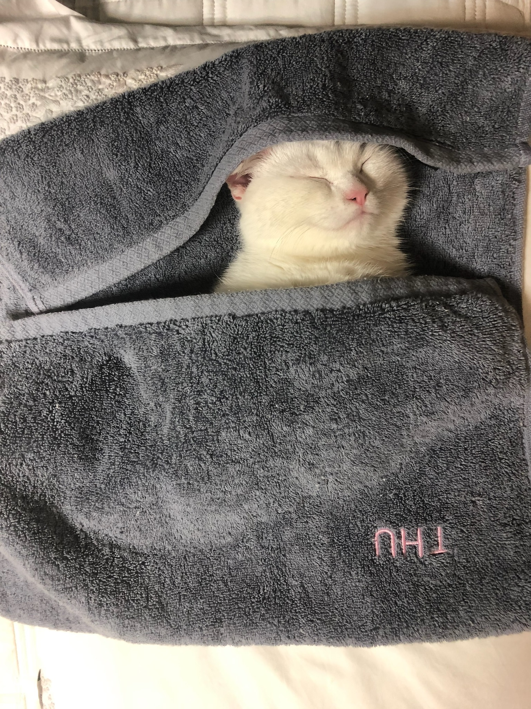
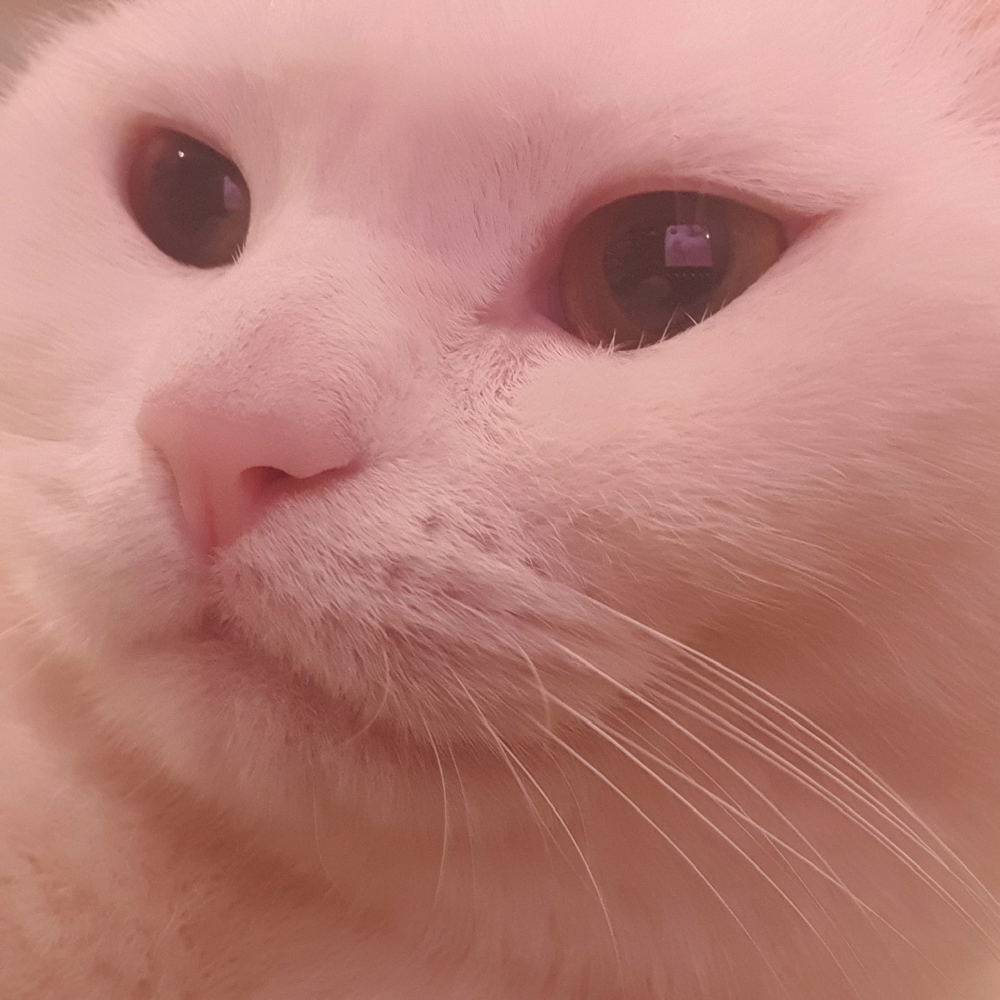
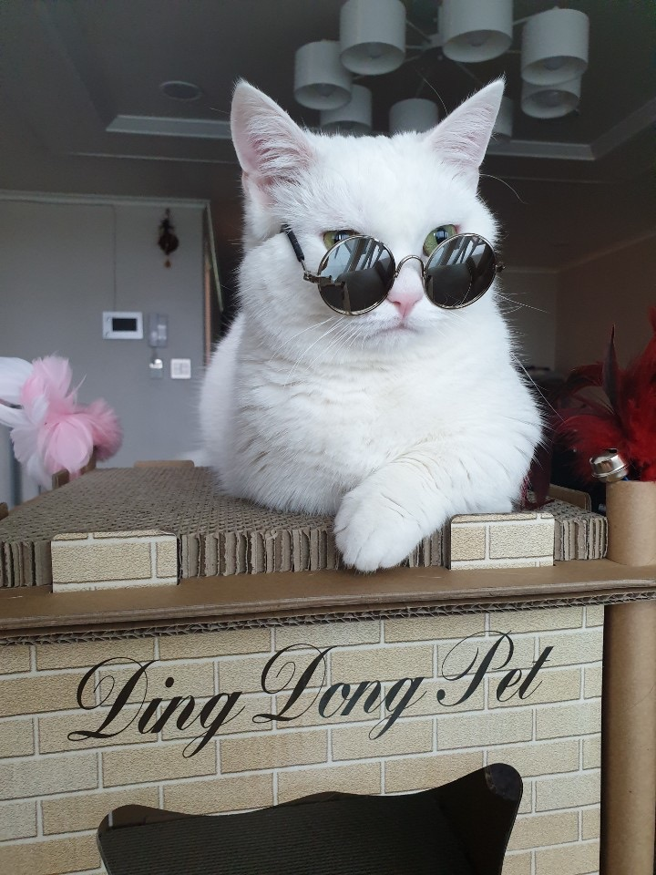

감사합니다.
개인 프로젝트 홈페이지입니다.
부족하지만 너그럽게 봐주세요!!
안녕하세요.

Introduce
Profile
이름 : 전일찬
성별 : 남
생년월일 : 1995.08.08
전화번호 : 010-7332-4564
이메일 : ilchan0808@gmail.com
Interesing
관심사 : 어떻게 하면 돈 많은 백수가 될 수 있을까?
좋아하는 음식 : 맛있는 음식 다~
싫어하는 음식 : 오이, 오이.. 그리고 오이
장점 : ...아직 고찰중
단점 : 너무 많다...
My soulmate to introduce
이름 : 상구
나이 : 4살
특이사항 : 겁쟁이
  
What is interesting
패션이 매력적인 이유
우리에게 영감을 주고 때로는 아우라를 만들기도 하며 우리의 기분을 무의식중에 움직이게 한다.
패션의 특징
올해의 컬러
세계적인 색채연구소 팬톤은 매년 그 해에 어울리는 '올해의 컬러'를 선보인다.
컬러의 힘이 높아지고 있는 가운데, 팬톤이 매년 발표하는 색은 전 사회적으로,
전 세계적으로 영향을 미치고 있다.
최근 팬톤이 발표한 2022년 올해의 컬러는
미묘하면서도 신비로운 분위기가 느껴지는 보라색인'베리 페리(Very Peri)'다.
각종 스타일
Casual style
경쾌한 옷차림, 격식에 메이지 않고 가볍게 입을 수 있는 옷차림이다.
Street style
요즘의 스트릿 패션은 힙합 감성의 패션스타일을 스트릿 스타일로 부른다.
Formal style
캐쥬얼 보다 깔끔하고 격식을 차리거나 신사적으로 입는 스타일이다.
Dandy style
깔끔하고 세련된 느낌이 강하며 심플한 느낌의 스타일이다.
좋아하는 스타일
선호하는 스타일은 깔끔하고 군더더기 없는 스타일을 보통 선호하기에 선택하게 되었다.
체형적으로 살이 많이 찌게 되어 옷이 대체적으로 널널한 핏을 선호하여 선택하게 되었다.
나이에 맞는 스타일이 존재한다 생각하는데, 20대에만 할 수 있는 스타일이라 생각되어 선택하였다.
Want to be...
초급개발자
1~3년차(공통)
Java, JSP/서블릿, Linux/Unix, JavaScript, HTML/CSS, 자료구조, 객체모델링, 데이터베이스, 형상관리, 단위테스트
프론트엔드
JSP와 Servlet, jQuery, 웹표준, Struts2, SpringMVC, 포토샵
백엔드
Java, 자료구조, Spring, SQL, myBATIS, 아파치/톰캣
중급개발자
6년차
프론트엔드
HTTP와 아키텍쳐, AJAX, JavaScript, jQuery, OpenAPI, Jersey&Result, HTML5, UI프로토타입, 웹표준, AngulaJS
백엔드
Java, 알고리즘, Unix/Linux, EJB, SQL, JPA/HIbernate, 객체모델링, 디자인패턴, Lucene, 단위테스트와 Unit
고급개발자
9년차
프론트엔드
WSDL/SOAP, UI/UX프로세스, 웹기획, Oauth, Spring Security, 웹개발과 TDD
백엔드
Java, 컴포넌트 모델링, 아키텍쳐 패턴, SW아키텍처, 시스템 연계 아키텍처, 서버개발과 TDD, AWS, OSGI, EntOSGi